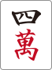
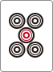
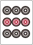

<!doctype html>
<html>
<head>
  <title>麻雀はじめの一歩</title>
  <link rel="stylesheet" href="../node_modules/talkiejs/dist/talkie.min.css">
  <link rel="stylesheet" href="../node_modules/talkiejs/dist/talkie-default.min.css">
  <link rel="stylesheet" href="https://cdnjs.cloudflare.com/ajax/libs/highlight.js/8.9.1/styles/monokai.min.css">
  <link rel="stylesheet" href="https://maxcdn.bootstrapcdn.com/font-awesome/4.4.0/css/font-awesome.min.css">
  <style>
    img {
      text-indent: 0;
      width: 48px;
    }
  </style>
</head>
<body>

<script layout="cover"
        invert
        type="text/x-markdown"
        backface="./img/cover.jpg"
        backface-filter="blur(1px) brightness(.8)">

# 麻雀はじめの一歩

by [@1000ch](http://twitter.com/1000ch)

</script>
<script layout="title"
        type="text/x-markdown">

## 麻雀とは？

4人のプレイヤーがテーブルを囲み136枚の牌を用いて手役を揃えるテーブルゲーム。手役の難易度に応じて得点をやりとりし、最終的に持ち点が高い人が勝利する。

</script>
<script layout="title"
        type="text/x-markdown">

# 麻雀牌の種類

</script>
<script layout="title"
        type="text/x-markdown">

## 萬子 (マンズ)



</script>
<script layout="title"
        type="text/x-markdown">

## 筒子（ピンズ）



</script>
<script layout="title"
        type="text/x-markdown">

## 索子（ソーズ）


</script>
<script layout="title"
        type="text/x-markdown">

## 字牌（ツーパイ）


</script>
<script layout="title"
        type="text/x-markdown">

# ルールがわからない人が覚えるべき基本原則

</script>
<script layout="bullets"
        type="text/x-markdown">

## 基本原則その1「アガリ形」

- アガリ形は14枚である
- 手元に13枚、自摸って14枚という流れを繰り返し行う
- **雀頭(2枚1組)が1つ** ＋ **面子(3枚1組)が4つ** という内訳


<small>※いずれも特殊なケース(七対子・国士無双・四槓子・十三不塔など)を除く</small>

</script>
<script layout="bullets"
        type="text/x-markdown">

## 基本原則その2「面子と雀頭」

- 雀頭（同じ牌が2つの組み合わせ）
    -  とか  とか
- 順子（同じ種類の牌で数字が3つ連続している組み合わせ）
    -  とか  とか
- 暗刻（同じ牌が3つの組み合わせ）
    -  とか  とか

</script>
<script layout="title"
        type="text/x-markdown">

## ここまでが最低限


何とか遊べる。でも、あがれない。

</script>
<script layout="bullets"
        type="text/x-markdown">

## アガるためには「役」が必要

- 牌の揃い方によって **役** が発生する
- 難易度が高ければ高い程、役の数は大きくなる
- 役は複合して発生することもある

ポーカーをイメージするとわかりやすいかも。 **ストレートとかフラッシュといった役があって、複合していればストレートフラッシュになる** 、みたいな。

</script>
<script layout="title"
        type="text/x-markdown">

# ルールがわからない人が覚えるべき5つの役

</script>
<script layout="title"
        type="text/x-markdown">

## 立直（リーチ）


あと1手でアガリという聴牌（テンパイ）の状態で、宣言する

</script>
<script layout="title"
        type="text/x-markdown">

## 断么九（タンヤオ）


1と9と字牌を含めずにアガる

</script>
<script layout="title"
        type="text/x-markdown">

## 平和（ピンフ）


順子で構成し、両面待ちでアガる

</script>
<script layout="title"
        type="text/x-markdown">

## 七対子（チートイツ）


対子を7つ構成する

</script>
<script layout="title"
        type="text/x-markdown">

## 混一色（ホンイーソー）


萬子・筒子・索子いずれかと字牌のみで構成する

</script>
<script layout="bullets"
        type="text/x-markdown">

## ひとまずこの5つを覚えよう

- ポン？チー？カン？そんなもんやらんでいい！
    - やりたい人は **翻牌（ファンパイ）** という役を覚えてからやること
- ドラ？そんなもん（最初は）気にしなくていい！
- 点数の数え方？そんなもん（最初は）気にしなくていい！

</script>
<script layout="title"
        type="text/x-markdown">

# 少しだけ実践の話

アガるために出来るだけ効率良く面子を作りたい

</script>
<script layout="bullets"
        type="text/x-markdown">

これらはいずれも残り1枚で面子が構成される

　　　

</script>
<script layout="bullets"
        type="text/x-markdown">

ちなみにこういう呼び名

　リャンメン（両面）

　カンチャン（嵌張）

　ペンチャン（辺張）

　シャンポン（双碰）

</script>
<script layout="bullets"
        type="text/x-markdown">

同じ牌は4枚しかないことを思い出すと…

　

　

　

　

</script>
<script layout="title"
        type="text/x-markdown">

# 両面最強

 ＞  ＞  ＞ 

</script>
<script layout="title"
        type="text/x-markdown">

# 嵌張＞辺張？

 ＞ 

</script>
<script layout="bullets"
        type="text/x-markdown">

## 面子になる牌の数は同じだが

　

　

</script>
<script layout="bullets"
        type="text/x-markdown">

## より良い形に変化しやすい

なら…

を引けばで面子になる

を引けばで両面になる

を引けばで両面になる

</script>
<script layout="bullets"
        type="text/x-markdown">

## まとめ

- 4面子1雀頭が和了の基本形
    - 手元に13枚・自摸って14枚を繰り返す
- アガるには「役」が必要
    - 紹介した5つを最低覚えたい
- 如何に他家より早く和了するか
    - セオリーを意識するだけでも違ってくるはず
- あとはひたすらゲームをやってみる
    - [MJ](http://sega-mj.com)とか[ハンゲーム](http://www.hangame.co.jp)とか

</script>
<script layout="cover"
        invert
        type="text/x-markdown"
        backface="./img/ep.jpg"
        backface-filter="blur(1px) brightness(.8)">
## おしまい

[@1000ch](http://twitter.com/1000ch)

</script>

<script src="https://cdnjs.cloudflare.com/ajax/libs/highlight.js/9.4.0/highlight.min.js"></script>
<script>hljs.initHighlightingOnLoad();</script>
<script src="../node_modules/talkiejs/dist/talkie.min.js"></script>
<script>
  Talkie({
    wide: false,
    control: true,
    progress: true
  });
</script>
</body>
</html>
